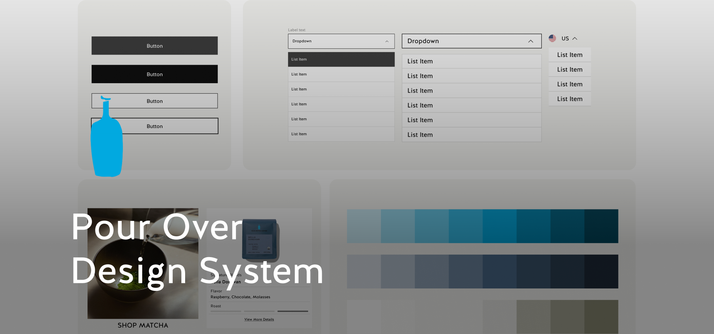
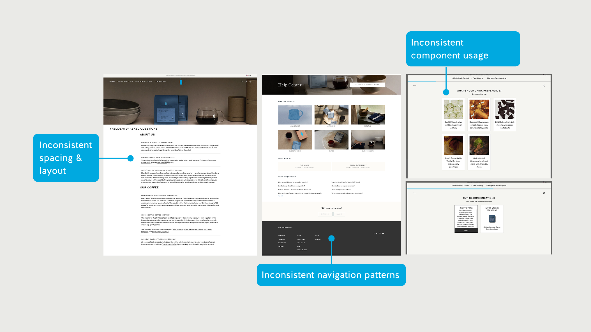
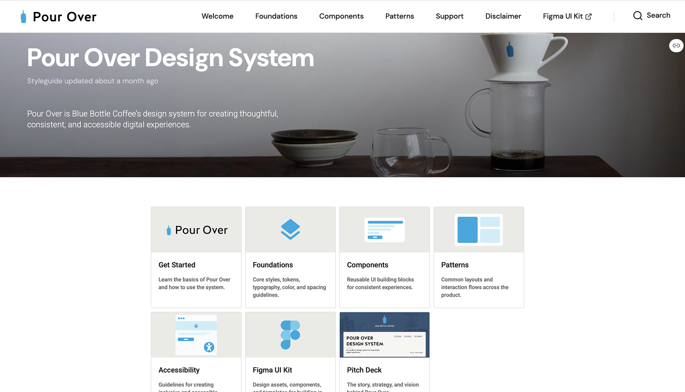
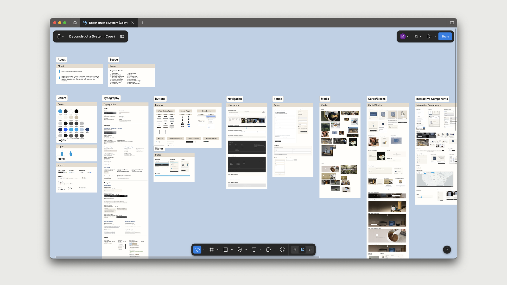
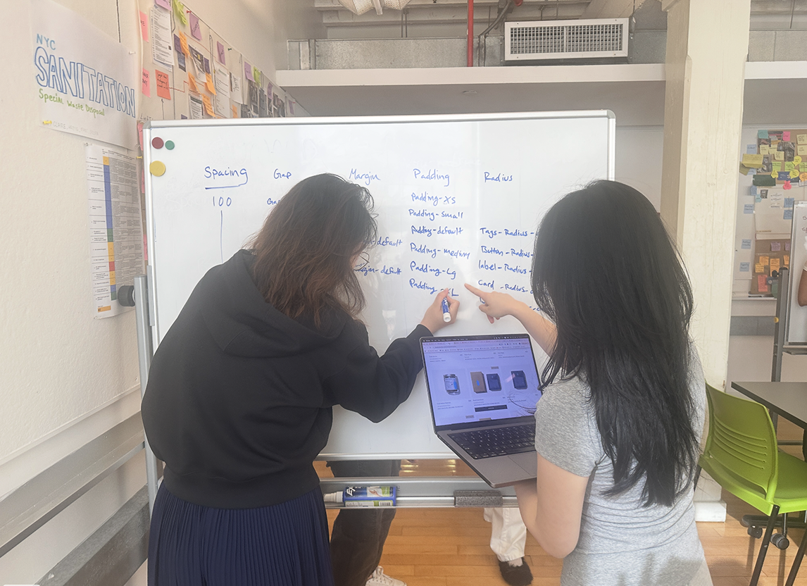
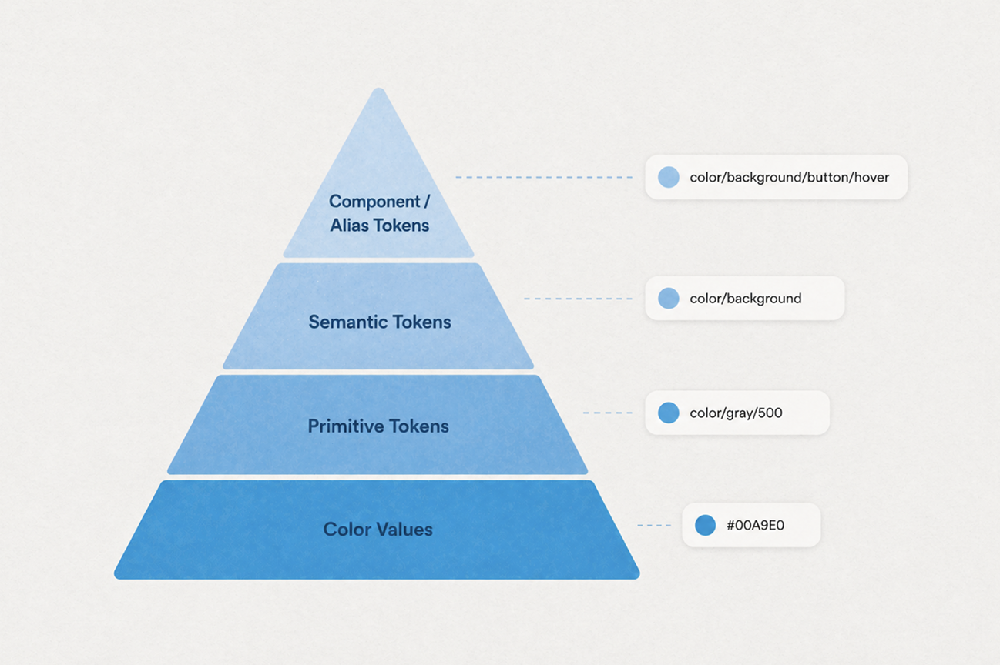
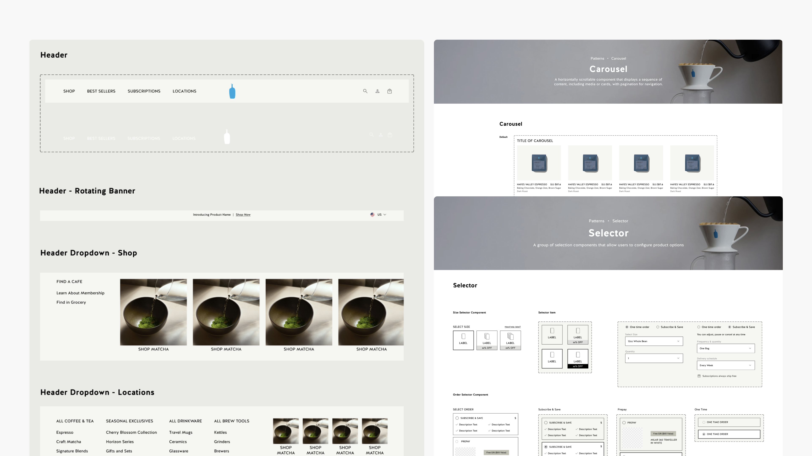
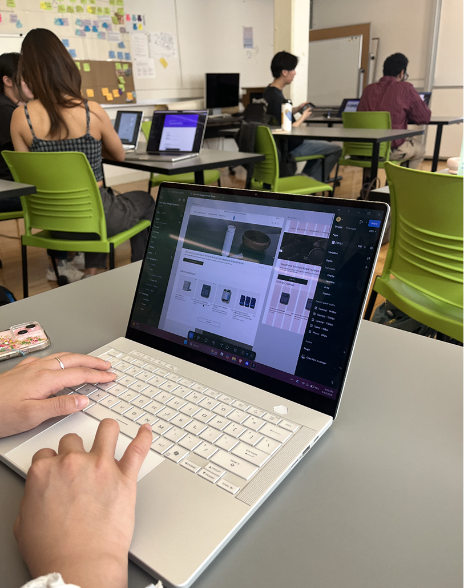
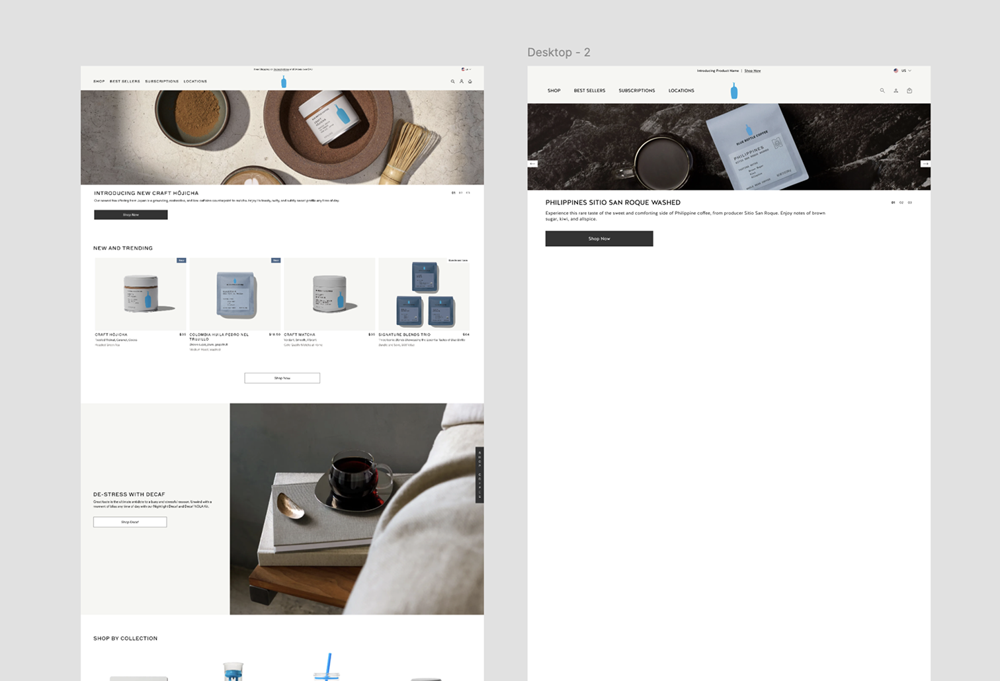
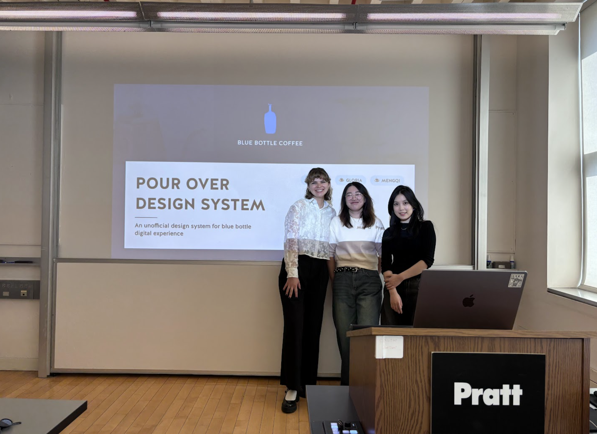

Figma UI Kit
Reusable foundations, components, and page patterns
 View UI Kit
View UI Kit
Design system / Blue Bottle Coffee
Building a unified design system for Blue Bottle Coffee, bringing the brand's core values of care, precision, and quality back to its digital experience.

What is Blue Bottle Coffee
Blue Bottle Coffee was founded in Oakland in 2002 and has since grown into a well-recognized brand in the specialty coffee space. They're known for their pour-over brewing method, sourcing fresh beans, and a focused approach to the coffee experience. Pour Over is an unofficial design system we built for Blue Bottle to make its digital experience consistent, intuitive, and inclusive.
Problem
When we looked more closely at the Blue Bottle website, we noticed the interface had accumulated a lot of inconsistencies across components, layouts, and interaction patterns. Together they made the experience feel unpolished and confusing for users to navigate.

Solution
To address these issues at scale, we created two artifacts that work together: a Figma UI kit that designers can build with directly, and a Zeroheight documentation site that explains how to use it correctly.
Figma UI Kit
View UI Kit
Documentation

View DocumentationProcess
We worked through four stages: deconstructing what existed, finding patterns in what we saw, building the foundations, and then assembling components and patterns on top.
Step 01 - Deconstruction
Before any design work, we did a full audit of the Blue Bottle website: every page, every component, every interaction state. The goal was to understand what already existed and where the inconsistencies came from.

The audit showed recurring inconsistencies in component structure, spacing, media ratios, and interaction behavior. The issue was not a single broken component; it was a lack of shared rules.

Cards, buttons, and footers changed structure depending on where they appeared.

Image treatments shifted between content types, making the site feel assembled from separate systems.

Menus, filters, and product controls used different interaction logic across pages.
Step 02 - Foundations
We translated the brand's calm, precise feeling into tokens for color, typography, spacing, and photography. These foundations made the system feel like Blue Bottle before any page was assembled.


The hardest part of this project was that there was no single right way to build a token system. This was the step we spent the most time on, and the one that generated the most debate. Unlike components, where we can look at the interface and make decisions, token structure is invisible. We're making architectural choices that affect everything downstream, and there is no obvious right answer.


We resolved this by committing to a pyramid model, four tiers, each with a clear responsibility. Once we agreed on what each level was for, most of the individual naming decisions answered themselves.
Step 03 - Components
After foundations, we built the high-frequency components that shape the commerce experience: buttons, image ratios, dropdowns, product cards, navigation, and footers.
Buttons
Buttons are the most consequential component on a commerce site. I standardized three button types across three sizes, with Figma variables covering every interaction state.

Media
Blue Bottle is image-heavy. Inconsistent ratios create visual noise, so I mapped eight aspect ratios to specific content types to remove ambiguity around cropping and display.

Dropdowns
The existing site had six dropdown styles. I replaced them with one component that handles every context through two variables: style and label.

Step 04 - Patterns
Once the component library was stable, we assembled commonly used page patterns: hero sections, content banners, product card grids, navigation bars, and footers. Designers do not usually build from individual atoms up; they reach for whole sections first. Patterns made page building faster without forcing layout decisions from scratch each time.

Testing
A design system's users are other designers. So we tested it with designers, asking them to recreate Blue Bottle pages using Pour Over from scratch, without any instructions beyond "use the kit."


What we observed
They reached for hero sections and banners rather than assembling from individual components
The system only had atoms — no assembled patterns
Added a pattern library with pre-composed page sections
The tokens existed but there were no rules for when to use which value
Usage documentation was missing for spacing
Wrote explicit spacing guidelines; updated token names to reflect context
Outcome
Pour Over is a complete design system for Blue Bottle Coffee. It includes a Figma UI kit with 14 documented components and 9 page patterns, plus a Zeroheight documentation site that serves as the team's single source of truth.
The system is guided by four principles that reflect Blue Bottle's brand values and helped us make decisions when the right answer was not obvious.
Restrained layouts, precise spacing, and purposeful reuse. Designed with intention and built to scale.
Clear hierarchy and simple structure reduce cognitive load and make experiences easy to use.
Approachable language and thoughtful details create comfort, trust, and connection.
Accessibility is built in from the start, creating clear and inclusive experiences for everyone.
Pour Over makes building pages quick, easy, and without confusion. Watch as our designer builds the homepage of Blue Bottle in 3 minutes. Video played on 1.6x speed.
Conclusion
At the end of the project, we pitched Pour Over to a panel of product designers acting as Blue Bottle stakeholders. The pitch covered the problem we set out to solve, how the system addresses it, and how it could be maintained and extended over time.

What I took away
A lot of our early debates were about things that felt small - token naming, whether a certain component needed an extra variant, how to organize the Figma file. They were not small. Getting aligned on principles and logic upfront meant we stopped having those debates mid-project and could just apply a shared framework.
We spent a lot of time researching token conventions before realizing there is no universal standard. Every approach has trade-offs. The most important thing was agreeing on a logic that our team could reason about consistently, then using that logic to answer edge cases rather than debating each one.
We felt good about the kit when we finished it. Watching someone use it for the first time showed us how much knowledge we had accumulated that was not in the documentation. The spacing guidelines are the clearest example: the tokens existed, but the rules for applying them did not.
Pour Over is solid at the design layer, but a design system does not fully land until it is implemented in code and adopted by an engineering team. This project made me want to go deeper into handoff: how tokens map to CSS variables, how component variants translate to props, and how to write documentation that developers can actually act on.